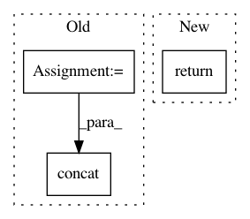

c56dc1933bd601a4630e963d4f0d3142fdc9c0d9,tutorials/mnist.py,,loss,#Any#Any#,82
Before Change
// be a 1.0 in the entry corresponding to the label).
batch_size = tf.size(labels)
labels = tf.expand_dims(labels, 1)
indices = tf.expand_dims(tf.range(0, batch_size), 1)
concated = tf.concat(1, [indices, labels])
onehot_labels = tf.sparse_to_dense(
concated, tf.pack([batch_size, NUM_CLASSES]), 1.0, 0.0)
cross_entropy = tf.nn.softmax_cross_entropy_with_logits(logits,
onehot_labels,
After Change
cross_entropy = tf.nn.softmax_cross_entropy_with_logits(
logits, onehot_labels, name="xentropy"
)
return tf.reduce_mean(cross_entropy, name="xentropy_mean")
def convert_labels_to_onehot(labels):
In pattern: SUPERPATTERN
Frequency: 3
Non-data size: 3
Instances
Project Name: lene/nn-wtf
Commit Name: c56dc1933bd601a4630e963d4f0d3142fdc9c0d9
Time: 2016-02-14
Author: lene.preuss@gmail.com
File Name: tutorials/mnist.py
Class Name:
Method Name: loss
Project Name: tryolabs/luminoth
Commit Name: 0551241850b132bd2a6829ba673c825425e55981
Time: 2017-10-05
Author: javirey@gmail.com
File Name: luminoth/models/base/base_network.py
Class Name: BaseNetwork
Method Name: _substract_channels
Project Name: chainer/chainercv
Commit Name: 827e12f3b9506e0f78cc79445441cd9d1f25c055
Time: 2018-04-24
Author: Hakuyume@users.noreply.github.com
File Name: chainercv/links/model/yolo/yolov3.py
Class Name: YOLOv3
Method Name: __call__